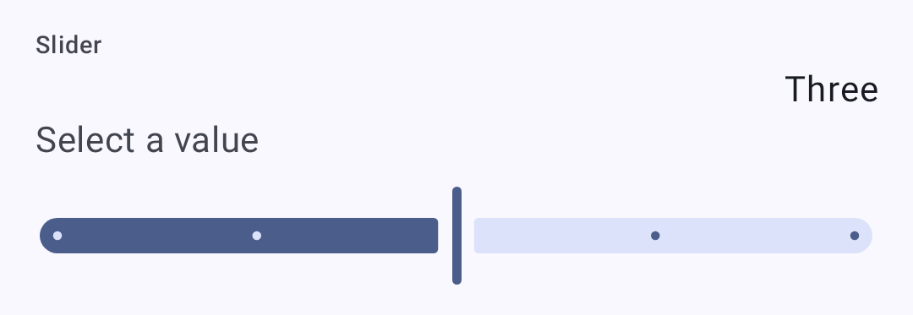
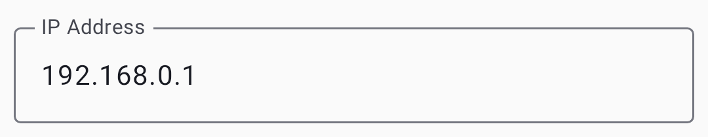

Settings — Radio & User
Configure your node’s user identity, region and LoRa parameters, position and power behavior, network and Bluetooth connectivity, and security settings.
How these screens work
Everything here is on the Settings screen. User, LoRa, Channels and Security are listed there directly, under Configuration. Device, Position, Power, Network, Display and Bluetooth are one level down, under Settings → Device configuration. Network appears only on nodes with Wi-Fi or Ethernet, and Bluetooth only on nodes with Bluetooth.
The Search settings field at the top of the Settings screen finds a setting by its name, its description, or a related term such as ttl for Hop Limit. Choosing a result opens the screen that holds the setting, scrolls to it, and highlights it for a moment. While you administer a remote node, the results leave out this phone’s own app settings.
With no node connected, the screens still open and show the settings last read from your own node, under the line Connect to a radio to change these settings. The controls stay disabled until a node connects.
Settings use standard preference controls — dropdowns, toggles, and sliders:
| Control | Screenshot |
|---|---|
| Dropdown |  |
| Toggle |  |
| Slider |  |
Impostazioni Utente
User Profile
On Settings → User. The screen also shows the read-only Node ID and Hardware model.
| Impostazione | Descrizione | Predefinito |
|---|---|---|
| Licensed amateur radio (Ham) | Turn on if you hold an amateur radio license. Turning it on is staged behind a confirmation dialog, because licensed mode removes the channel encryption keys and sends all traffic as plaintext. On your own node it then relabels Long Name as Call sign (up to 7 characters) and adds a separate, optional Long Name that is appended to the call sign. Over remote admin the field stays Long Name | Disattivato |
| Nome Lungo | Your display name. Up to 24 bytes on firmware 2.8 or newer, and 39 on older firmware | Set by the firmware |
| Nome Breve | Up to four characters | Set by the firmware |
| Messaggio di Stato | A short, public free-text status other nodes display alongside your node, up to 80 bytes, cleared with the ✕ in the field. The node broadcasts it to the mesh when you change it and again every 12 hours. Needs firmware 2.7.20 or newer, and is absent otherwise | Empty |
| Non messaggiabile | Marks the node as unmonitored or infrastructure, one nobody should try to message. This app shows it with an icon in the node list. Firmware 2.6.9 or newer is needed to change it | Disattivato |
Applying changes
The footer appears as soon as you change something. Discard throws the change away, and the other button writes it to the node: it reads Save & restart on the screens the firmware applies with a reboot — Position, Network, Bluetooth, Security, and most module screens — and Save everywhere else.
The status message is saved with the same Save, but it never reboots the node — and, like the rest of this screen, it can be edited on a remote node you administer. For your own node there is a shortcut while it is connected: touch & hold your node in the node list and choose Update status. Older firmware and a disconnected node have no shortcut — the field itself is still the way in.
Configurazione Dispositivo
On Settings → Device configuration → Device. These settings set the node’s role on the mesh and its local hardware behavior.
| Impostazione | Descrizione | Predefinito |
|---|---|---|
| Button GPIO / Buzzer GPIO | Advanced: which pins the user button and the PWM buzzer are wired to | 0 (board default) |
| Ruolo Del Dispositivo | Node behavior: Client, Client Mute, Client Hidden, Client Base, Router, Router Late, Tracker, Sensor, TAK, TAK Tracker, or Lost and Found. The description of the selected role appears under the field. Choosing Router or Router Late opens a dialog where you confirm you have read the device-role guidance before Accept is enabled | Client |
| Disable LED Heartbeat | Controls the blinking status LED. Despite the label, the switch is on while the LED blinks | On (LED blinks) |
| Doppio tocco come pressione pulsante | Treat a double tap on a supported accelerometer as a button press | Disattivato |
| Intervallo Di Trasmissione Info Nodo | How often the node re-announces itself. A dropdown of fixed intervals: Unset, then 3 to 72 hours | 3 hours |
| Modalità Ritrasmissione | Which packets the node relays: All, All Skip Decoding, Local Only, Known Only, None, or Core Portnums Only. The description of the selected mode appears under the field. None isn’t allowed with the Router roles | All |
| Fuso Orario | POSIX time-zone string for dates on the node’s screen and in its log. Use phone time zone fills it from this phone, and the ✕ clears it | Empty |
| Triple Click Ad Hoc Ping | Send a position on the primary channel when the user button is triple-clicked | On |
Configurazione LoRa
On Settings → LoRa. These settings decide where and how the node transmits. Region, preset and the manual modem settings are on the Options card. The rest are on Advanced.
⚠️ Important: Operating without the correct region may violate local radio regulations. See the region configuration guide on meshtastic.org for details.
| Impostazione | Descrizione | Default |
|---|---|---|
| Bandwidth (kHz) | Manual mode only: the channel bandwidth in kHz, typed in directly. On the 2.4 GHz region the app offers a list of the bandwidths your node supports instead, headed by Default (812.5 kHz). A stored value that isn’t on that list shows as Unsupported and blocks saving until you pick a supported one | From preset |
| Coding Rate | Manual mode only: 5 to 8, the denominator of 4/n. More redundancy costs airtime | From preset |
| Coding Rate Override | Preset mode only, firmware 2.7.18 or newer: raises the preset’s coding rate for more error correction while keeping its bandwidth and spread factor. Only rates above the preset’s own are offered, and a preset already at 4/8 has none. Nodes on the same preset still hear each other, but every packet takes longer on air and uses more of the duty cycle. Switching to a preset that already meets the override resets it to the preset default | Preset default |
| Sovrascrivi Frequenza | Overrides the computed operating frequency outright, in MHz. It doesn’t offset the calculated value. While it is 0 the field shows the computed frequency with Auto beside it | 0 (use calculated) |
| Frequency Slot | Which slot within the region’s band to use. At 0 the region picks the slot, usually from the primary channel name, and the field shows that slot with Auto beside it | 0 (automatic) |
| Hop Limit | How many times a message may be repeated before it stops being forwarded, 0 to 7 | 3 |
| Ignora MQTT | Drop packets that arrived from MQTT rather than over the air. The firmware turns this on for you whenever you set a region that has a duty-cycle limit — the EU bands, Thailand, and Ukraine 433 | Off, until you set a duty-cycle-limited region |
| OK to MQTT | Allow your packets to be forwarded to MQTT by gateways | Off |
| Ignora limite di Duty Cycle | Ignores the region’s duty-cycle limit. Illegal in most regions; turn it on only where your license permits | Off |
| PA Fan Disabled | Turn off the power-amplifier fan. Shown only on hardware that has one | Off |
| Preset | Speed and range tradeoff, listed by full name such as Long Range - Fast. See Modem presets | Long Fast. When a node on firmware 2.8 or newer is first set to the United States region, the app picks Long Turbo |
| Regione | Regulatory region for frequency bands. You must set this before transmitting. On firmware 2.8 or newer, the first region set also creates the node’s identity key and gives it a new node number | Unset (must configure) |
| Migliora guadagno in Ricezione | Extra receive gain on SX126x radios; costs a little current | On |
| Spread Factor | Manual mode only: 5 to 12. Higher spreads further but slower. On SX127x (RF95) radios the firmware doesn’t accept 5 or 6 and uses 11 instead | From preset |
| Trasmissione Abilitata | Turning this off makes the node receive-only | On |
| Transmit Power | In dBm. 0 uses the highest power legal for the region, which suits most nodes | 0 (region max) |
| Usa Preset | Turn it off to set Spread Factor, Coding Rate and Bandwidth by hand instead of taking them from the modem preset | On |
The preset list is also filtered to what your region legally permits, so a preset allowed in one region doesn’t appear in another. Changing region can therefore leave your current preset illegal — the app repairs it for you, switching to the region’s own default rather than leaving an unusable setting in place. The region list itself is filtered by what your firmware supports, so the regions added in 2.8 appear only on 2.8 or later, alongside whichever region the node already has set.
Some regions are amateur radio allocations whose presets only licensed operators may use. On firmware 2.8 or newer the app knows which regions those are and grays the whole Presets list out until Licensed amateur radio (Ham) is turned on for the node you are configuring; the text under the field says so while it is grayed out.
Modem presets
The Lite, Narrow, Medium Turbo, and Tiny presets need firmware 2.8 or newer — the app hides them on older nodes.
This table uses the short names. The Presets dropdown spells each one out, such as Long Range - Fast, Short Range - Turbo and Lite - Slow.
The SNR Limit values are negative on purpose. LoRa can decode signals below the noise floor, so a more-negative limit means the preset tolerates a weaker, noisier signal (more range). See How the Signal Meter Works for the full explanation.
| Preset | Range | Velocità | SNR Limit | Best For |
|---|---|---|---|---|
| Short Turbo | ~1 km | 21.9 kbps | −7.5 dB | Dense urban with line-of-sight; data-heavy applications |
| Short Fast | ~3 km | 10.9 kbps | −7.5 dB | Urban neighborhoods; buildings within a few blocks |
| Short Slow | ~5 km | 6,25 kbps | −10 dB | Suburban short-range; moderate building density |
| Medium Fast | ~5 km | 3,52 kbps | −12.5 dB | Suburban areas; moderate building density |
| Medium Slow | ~8 km | 1,95 kbps | −15 dB | Suburban/rural; moderate range with slower speed |
| Long Turbo | ~10 km | 1.34 kbps | −17.5 dB | Similar range to Long Fast but with 500 kHz bandwidth; faster throughput |
| Long Fast | ~10 km | 1.1 kbps | −17.5 dB | General use (default) — balanced range and speed |
| Long Moderate | ~20 km | 0,34 kbps | −17.5 dB | Rural with some terrain; occasional use |
| Lite Fast | ~5 km | 1.76 kbps | −12.5 dB | EU 866 MHz SRD band (125 kHz BW); comparable to Medium Fast |
| Lite Slow | ~10 km | 0.98 kbps | −15 dB | EU 866 MHz SRD band (125 kHz BW); comparable to Long Fast |
| Narrow Fast | ~5 km | 2.28 kbps | −7.5 dB | EU 868 MHz band (62.5 kHz BW); avoids interference with other devices |
| Narrow Slow | ~10 km | 1.30 kbps | −10 dB | EU 868 MHz band (62.5 kHz BW); comparable to Long Fast |
| Medium Turbo | ~5 km | 7.0 kbps | −12.5 dB | Like Medium Fast but with 500 kHz bandwidth; not legal in every region. Needs firmware 2.8 or newer |
| Tiny Fast | ~10 km | 0.68 kbps | −7.5 dB | Amateur bands that cap occupied bandwidth; these presets use 15.6 kHz. Needs firmware 2.8 or newer, an SX126x or SX127x radio, and a TCXO of ±5 ppm or better |
| Tiny Slow | ~20 km | 0.33 kbps | −10 dB | Same band restrictions as Tiny Fast, longer range. Same firmware, node, and TCXO requirements |
| Long Slow | ~30 km | 0,18 kbps | −20 dB | Deprecated. Still selectable, but may be removed in a future firmware release |
| Very Long Slow | ~40+ km | 0.09 kbps | −20 dB | Deprecated. Firmware 2.6.5 and newer no longer support it |
Choosing a modem preset
The modem preset controls the fundamental tradeoff between range and data rate:
- Slower presets use more spreading, making signals decodable at weaker signal levels (lower SNR limit). This means longer range but fewer bytes per second.
- Faster presets pack more data per transmission but require a stronger signal to decode.
Practical guidance:
- Urban mesh (many nodes, short distances): Use Long Fast (default) or Short Fast. Higher speed means less airtime congestion when many nodes share the channel.
- Rural/sparse mesh (few nodes, long distances): Use Long Moderate. Range matters more than speed when nodes are far apart.
- EU 866/868 MHz regulatory compliance: Use Lite Fast, Lite Slow, Narrow Fast, or Narrow Slow — these are optimized for the EU SRD/868 MHz bands with narrower bandwidths.
- Fixed infrastructure links: Use Short Turbo or Long Turbo for dedicated point-to-point links with good antennas and line-of-sight.
- Mixed environments: Stick with Long Fast — it’s the community default and ensures compatibility with others in your area.
All nodes on the same channel must use the same modem preset. Nodes with mismatched presets can’t communicate even if they share the same frequency and encryption key.
The range estimates in the Modem Presets table assume flat terrain and modest antennas. Elevation advantage (hilltop, rooftop) dramatically increases effective range. A well-placed Router with Long Fast can often outperform a ground-level node with Long Slow.
Configurazione Schermo
On Settings → Device configuration → Display. These control the node’s own screen, not the app’s.
| Impostazione | Descrizione | Default |
|---|---|---|
| 12 Hour Clock | Show the node’s clock as 12-hour rather than 24-hour | Off |
| Punta sempre a nord | Locks the compass rose north-up instead of rotating it with your heading. Independent of Compass Orientation — neither replaces the other | Off |
| Intestazione in grassetto | Draw the screen’s heading text in bold | Off |
| Carousel Interval | How often the node moves to its next screen on its own: Unset (never), or 15 seconds to 15 minutes | Unset |
| Compass Orientation | Rotation offset for the compass rose: 0°, 90°, 180° or 270°, each with an Inverted variant | 0° |
| Display Mode | Screen layout: Default 128x64 screen layout, Optimized for 2 color displays, Inverted top bar for 2 color displays, or TFT Full Color Displays | Default, or color on nodes with a color screen |
| Display Units | Metric or Imperial on the node’s screen | Metric |
| Flip Screen | Flip the display for an inverted mounting | Off |
| OLED Type | Overrides automatic OLED detection: Detect Automatically, SSD1306, SH1106, SH1107, SH1107 128x128, or SH1107 Rotated | Detect Automatically |
| Tieni lo schermo acceso per | How long the display stays lit after a button press or a received message: 15 seconds to 1 hour, or Always On | 10 minutes |
| Wake Screen on tap or motion | Light the screen when the node is tapped or moved. Needs an accelerometer | Off |
Configurazione Posizione
On Settings → Device configuration → Position. These settings decide where the node’s position comes from and how often it is shared.
| Impostazione | Descrizione | Default |
|---|---|---|
| Intervallo Di Trasmissione | The longest the node goes without broadcasting its position: Unset, or 1 minute to 72 hours | 1 hour |
| Posizione Fissa | Broadcast a manually entered Latitude, Longitude and Altitude instead of a live GPS fix. Set from current phone location fills them in | Off |
| GPS Enable GPIO / GPS Receive GPIO / GPS Transmit GPIO | Advanced: the pins an add-on GPS module is wired to. Hidden on boards whose maker wired the GPS, unless a pin already holds a value | 0 |
| GPS Mode | Enabled, Disabled, or Not Present. Hidden while Fixed Position is on | Depends on the hardware |
| Minimum Distance | In meters. With Smart Position on, how far you must move before a broadcast is considered | 100 m |
| Minimum Interval | With Smart Position on, the shortest gap between broadcasts once the distance is met | 5 minutes |
| Flag Di Posizione | A group of checkboxes choosing which fields ride along with a position, such as altitude, its reference and precision, satellites in view, and timestamp | Altitude, Altitude is Mean Sea Level, Vehicle speed, Vehicle heading, DOP, Number of satellites |
| Posizione Smart | Broadcast based on movement rather than purely on the clock | On |
| Update Interval | How often the node asks its GPS for a fix. Hidden while Fixed Position is on | 2 minutes |
Configurazione Alimentazione
On Settings → Device configuration → Power. These settings trade battery life against availability.
| Impostazione | Descrizione | Default |
|---|---|---|
| Sovrascrivi moltiplicatore ADC | Turn on a manual correction for battery-voltage readings | Off |
| ADC Override | The correction factor itself, shown only while the override is on | — |
| Indirizzo INA_2XX I2C della batteria | Address of an external INA-series power sensor, if fitted | 0 |
| Tempo minimo di risveglio | The shortest time the node stays awake once woken | 10 seconds |
| Power Saving | Sleep as much as possible. On the Tracker and Sensor roles this includes the LoRa radio. Not for a node you use with the app, or one without a user button | Off |
| Shutdown on Power Loss | How long after external power is removed before the node powers off. Unset disables it, and values under 30 seconds are raised to 30 | Unset |
| Durata super deep sleep | How long the deepest sleep state lasts | — |
| Wait for Bluetooth Duration | How long to wait for a phone to connect before sleeping | 1 minute |
Configurazione Della Rete
On Settings → Device configuration → Network, on nodes with Wi-Fi or Ethernet. When the node is on a network, a Current connections: card at the top shows its Wi-Fi IP: or Ethernet IP:.
⚠️ Warning: Turning on WiFi Enabled or Ethernet Enabled ends the Bluetooth connection between your phone and the node. Reconnect over the network afterwards from the Connections screen, or turn Wi-Fi off again from the node’s own screen or over USB. Saving this screen also always reboots the node.
| Impostazione | Descrizione | Default |
|---|---|---|
| Address Mode | DHCP, or Static with the four address fields that follow | DHCP |
| Ethernet Enabled | Use a wired connection. Shown only on hardware that has Ethernet | Off |
| IP / Gateway / Subnet / DNS | The static address, shown only when Address Mode is Static | — |
| NTP Server | Time synchronization server | meshtastic.pool.ntp.org |
| Password | Network password. Appears only once WiFi Enabled is on | — |
| Rsyslog Server | Remote logging server | — |
| SSID | Network name to connect to. Appears only once WiFi Enabled is on. Scan Wi-Fi QR code fills it and Password from a standard Wi-Fi QR code; on Android, holding the phone against a Wi-Fi NFC tag while this screen is open fills them the same way, and the app offers to open system settings if NFC is turned off | — |
| Trasmissione UDP | Share mesh traffic with other nodes over the local network | Off |
| WiFi Enabled | Connect the node to Wi-Fi | Off |

Configurazione Bluetooth
On Settings → Device configuration → Bluetooth, on nodes with Bluetooth.
| Impostazione | Descrizione | Default |
|---|---|---|
| Bluetooth Enabled | Turn the node’s Bluetooth on or off | On, except on some nodes with a color screen |
| Fixed Pin | PIN code for pairing, used with FIXED_PIN. Must be exactly six digits — the field rejects anything else | 123456 |
| Pairing Mode | Listed by firmware name: RANDOM_PIN, FIXED_PIN, or NO_PIN | RANDOM_PIN on nodes with a screen, FIXED_PIN on nodes without one |
Configurazione Sicurezza
On Settings → Security. The screen is grouped into cards: Packet authenticity, Direct Message Key (your node’s key pair), Admin Keys, Logs, and Administration.
| Impostazione | Descrizione | Default |
|---|---|---|
| Chiave Amministratore | Public keys permitted to administer this node remotely, up to three | None |
| Backup chiavi | Save an encrypted backup of the node’s keys on this phone. Only for your own node, and not in the desktop app | — |
| Debug Logs | Output live debug logging over serial, and view and export position-redacted node logs over Bluetooth | Off |
| Delete Key Backup | Remove the stored key backup from this phone | — |
| Managed Device | Locks the whole Configuration list, not just channels — every setting on the node becomes read-only and only an admin can change anything. Only selectable once an Admin Key is set | Off |
| Chiave Privata | Your node’s private key (handle securely). Shown redacted when you are viewing another node over remote admin — the firmware doesn’t send it | Generated by the node |
| Livello di protezione | How unsigned packets are treated: Strict — Require authentication, Balanced — Prefer authenticated, or Compatible — Accept unsigned. Needs firmware that supports packet signing; Strict asks for confirmation | Compatible |
| Chiave Pubblica | Your node’s public key (read-only) | Derived from the private key |
| Rigenera Chiavi Private | Issues a new keypair for this node, behind a confirmation. Every peer that knew your old key must learn the new one | — |
| Restore Keys | Write the backed-up keys back to the node (available once a backup exists) | — |
| Serial Console | Serial console over the Stream API | On |
Lockdown Mode
Lockdown encrypts the device’s storage and requires a passphrase for each connection. It needs supporting firmware; the row doesn’t appear otherwise.
⚠️ Warning: There is no passphrase recovery. Losing it means erasing the device to get it back, which destroys its keys, channels and settings.
Enabling it asks you to set and confirm a passphrase, and to acknowledge that it locks the debug (SWD) port on hardware where the lockout takes effect. That part isn’t reversible from the app. Turning lockdown off later decrypts your storage and reboots the device, but the port stays locked. Reopening it takes a full chip erase with a debug probe, which destroys everything on the device.
Alongside the passphrase you set the limits that end a session automatically:
| Field | What it does |
|---|---|
| Avvii rimanenti | How many device boots the unlocked state survives. Starts at 50 |
| Ore alla scadenza | Wall-clock lifetime of the unlocked state |
| Limite di sessione (minuti) | A per-boot uptime cap on the unlocked state. 0, the default, means no cap |
Once active, the row reads Active — storage encrypted, this connection authenticated when unlocked, or Active — enter your passphrase to unlock this connection when not. Lock Now ends the current session immediately. Repeated wrong passphrases are rate-limited with a back-off before you can try again.
Related Topics
- Settings — Modules & Admin — optional feature modules and device administration
- Signal Meter — how modem presets affect signal quality thresholds
- LoRa configuration — detailed LoRa settings reference on meshtastic.org
- Initial configuration — region setup guide on meshtastic.org